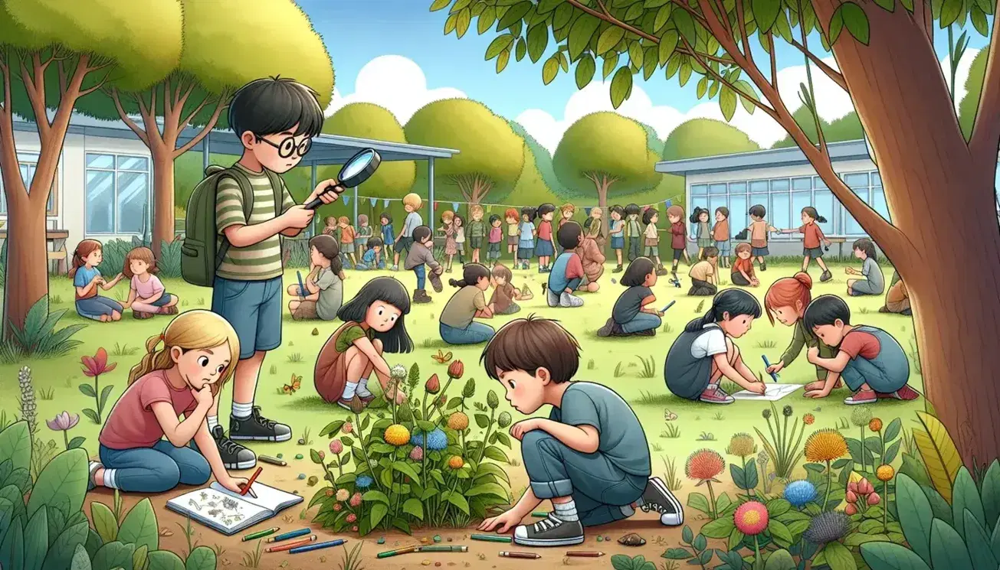
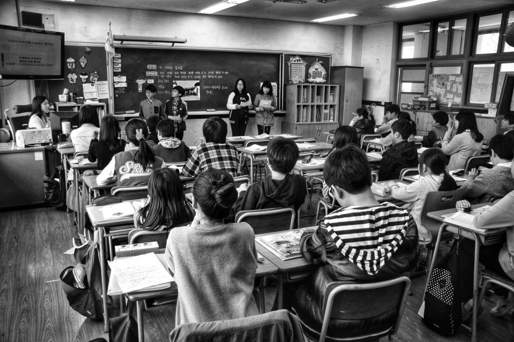
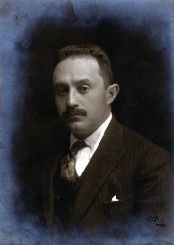
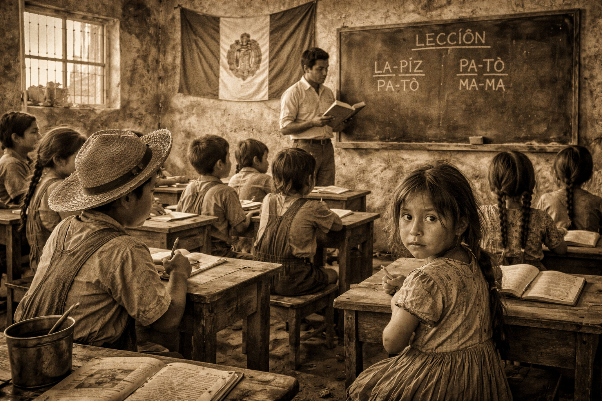
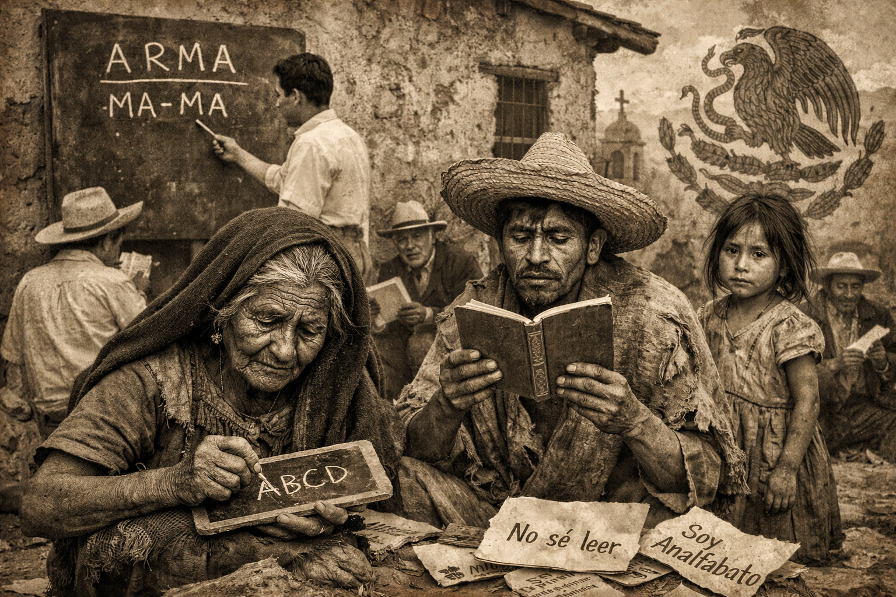

¿Quién fue José Vasconcelos?
José Vasconcelos Calderón
- Nacio en Oaxaca, 27 febrero 1882, Ciudad de México, 30 junio 1959.
- Fue un intelectual, educador, filósofo, escritor y político mexicano.
- Fundamental en la construcción del sistema educativo post-Revolución Mexicana.
Formación de maestros
- Promovió la creación, reorganización y expansión de escuelas normales y rurales para formar docentes con una visión nacional y cultural.
Normal Superior de México
- Aunque la Escuela Normal Superior de México (ENSM) se constituyó formalmente después de la administración de Vasconcelos, en 1942, su legado de centralización y profesionalización del magisterio fue parte del contexto en el que se creó esa institución.
José Vasconcelos Calderón
- Nacio en Oaxaca, 27 febrero 1882, Ciudad de México, 30 junio 1959.- Fue un intelectual, educador, filósofo, escritor y político mexicano.
- Fundamental en la construcción del sistema educativo post-Revolución Mexicana.
Formación de maestros
- Promovió la creación, reorganización y expansión de escuelas normales y rurales para formar docentes con una visión nacional y cultural.Normal Superior de México
- Aunque la Escuela Normal Superior de México (ENSM) se constituyó formalmente después de la administración de Vasconcelos, en 1942, su legado de centralización y profesionalización del magisterio fue parte del contexto en el que se creó esa institución.Filosofía de la educación de Vasconcelos

1.Para Vasconcelos:
-La educación no debía limitarse a transmitir conocimientos: tenía que formar personas conscientes de su historia, cultura e identidad nacional.
-El maestro era visto como un agente cultural y social, no solo un instructor académico.
-Filosofía personal aplicable a la educación: Aunque no hubo una “filosofía de la educación” formalizada en un libro único, sus escritos y acciones muestran algunos ejes.
-La educación debe ser liberadora y promover la dignidad humana, no solo la técnica docente.
-El pensamiento educativo se enmarca en un idealismo humanista, que busca integrar naturaleza, emoción y razón.
-Para él, la educación y la cultura son fuerzas sociales integradoras que unifican y elevan al pueblo mexicano hacia una conciencia colectiva.
Educación como instrumento social
-Para Vasconcelos, la escuela era un medio para: Incluir culturalmente a sectores marginados (especialmente indígenas y rurales).
-Desarrollar un sentido de unidad nacional a través de la educación pública centralizada.
-Esto refleja una idea básica de la sociología de la educación: la educación no solo transmite conocimientos, sino que reproduce o transforma culturas, valores y estructuras sociales.
Identidad y mestizaje
-Su obra filosófica "La raza cósmica" aborda una visión sociocultural para América Latina que influyó en cómo concebía la educación.
-Propone que la educación debe favorecer una nueva visión humana y social integradora, basada en el mestizaje y la interculturalidad.
-Esto implica que para Vasconcelos la educación estaba intrínsecamente ligada a la identidad social y cultural.
-Hizo de la SEP un eje fundamental del sistema educativo mexicano, incluyendo escuelas normales y rurales.

4.-Planteó una visión educativa humanista centrada en cultura, identidad y desarrollo social.
-Impulsó la idea de que el maestro sea agente de transformación social.
-Su pensamiento integró filosofía, cultura, sociología y educación como prácticas inseparables.
-José Vasconcelos fue mucho más que un funcionario educativo: fue un filósofo de la educación que integró ideas culturales, filosóficas y sociales a la práctica pedagógica. Aunque no dirigió directamente la Normal Superior de México, su influencia en la formación docente, la estructura de las instituciones educativas del país y la filosofía educativa marcó un antes y después en la educación mexicana.



EDUCATIVO NACIONAL

Relación con las Escuelas Normales y la Normal Superior
1942Durante su gestión, Vasconcelos fortaleció la formación docente porque consideraba al maestro como el eje del cambio social. Impulsó la reorganización de las escuelas normales y promovió la profesionalización del magisterio.
Aunque la Escuela Normal Superior de México fue fundada en 1942, después de su administración, su creación fue consecuencia del modelo educativo que él impulsó. La Normal Superior se enfocó en preparar profesores especializados para secundaria, siguiendo la idea de que la educación debía elevar su nivel académico y profesional.
Para Vasconcelos, el maestro debía ser más que un transmisor de conocimientos: debía ser líder cultural, orientador moral y agente de transformación comunitaria.
Filosofía y sociología de la educación en Vasconcelos
Punto de vista sociológico
El pensamiento educativo de Vasconcelos se basó en un humanismo idealista. Creía que la educación debía formar integralmente al ser humano: mente, valores, cultura y sensibilidad artística. En su obra La raza cósmica planteó que el mestizaje latinoamericano representaba una nueva síntesis cultural, idea que influyó en su visión de una educación nacional integradora.
Desde el punto de vista sociológico, veía la educación como un instrumento para reducir desigualdades y construir unidad nacional. Impulsó la educación rural y las misiones culturales para integrar a comunidades indígenas y campesinas al proyecto nacional. Así, la escuela se convirtió en un medio para transformar la sociedad y fortalecer el Estado mexicano.

Proyecto educativo nacional
Después de la Revolución Mexicana, el país tenía altos índices de analfabetismo y gran desigualdad social. Vasconcelos entendió que la educación sería el principal medio para reconstruir y unificar a México.Impulsó campañas de alfabetización, creó bibliotecas públicas y promovió la edición de libros accesibles para el pueblo. Además, fortaleció las escuelas normales para formar maestros comprometidos con el desarrollo social. Su proyecto buscaba no solo enseñar conocimientos básicos, sino formar ciudadanos con identidad cultural y conciencia nacional.